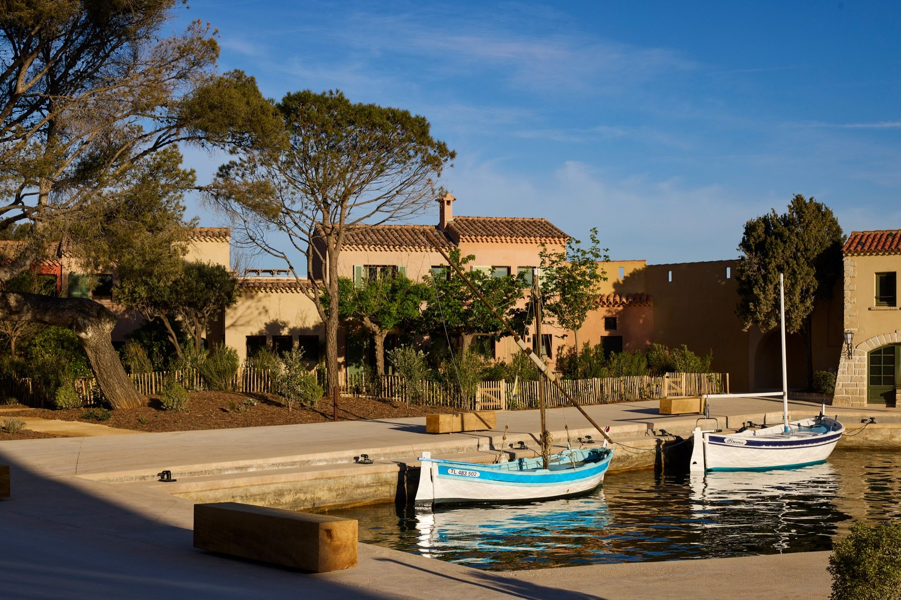

A five-minute boat ride, a world away — Paul Ricard's private island, reimagined by Zannier.
Just off the coast of Bandol on the French Riviera sits a tiny private island with an outsized history. Île de Bendor was once the personal retreat of pastis magnate Paul Ricard, who spent decades filling it with gardens, art, and a distinctly southern-French sense of leisure.
Zannier Hotels has reimagined the entire island as a one-of-a-kind resort — honey-stone villages, a working harbor, a spa built into the rock, and some of the best sunset views on the Côte d'Azur. The island unfolds across two garden villages, Delos and Soukana, each with its own pool and its own personality, connected by footpaths and electric buggies.
It's a featured property on my list, and the kind of booking where the details matter: the right village, the right suite, and the right season change the entire experience. That's what I handle.

Three rooms worth knowing. The Delos Pavilion Suite, with arched windows opening straight onto the sea; the warmer, residential Soukana Terrace Junior Suite in the gardens; and The Delos Suite — the island's most private terrace, with an outdoor soaking tub under the lemon trees.
The Rēsonance Wellness Centre. A spiral stone staircase drops straight into a plunge pool, with a second courtyard pool, treatment rooms, and a tea room above.
Sunset at Le Grand Large, apéro at Bar Patrick. Cliffside tables for sunset, a yacht-club dining room at La Table Delos for everything else, and a hand-tiled bar built for a slow pastis at golden hour.
No cars, by design. Electric 'Mini Kate' buggies shuttle guests between villages, the harbor, and the pools.
Pick your village deliberately. Delos puts you on the water; Soukana is quieter, tucked into the gardens near the pine groves. Couples who want to wake up to water on both sides should ask me for the Delos Pavilion Suite.
The perks are specific here. Booking through me adds an upgrade on arrival and early check-in/late check-out (both subject to availability), plus a $100 USD equivalent food & beverage credit — breakfast is already included in the property's rates.
It's a boat-access island. Five minutes from Bandol — easy, but worth building your Riviera routing around rather than treating as a drive-up hotel.
A one-of-a-kind private island on the Côte d'Azur — the featured property I reach for when clients want the Riviera without the scene.
Rates through me are identical to booking direct — the perks are not. As a Fora advisor, my clients receive a space-available upgrade, daily breakfast, and a $100 USD equivalent food & beverage credit — plus my direct line to the team on property before and during your stay.
Check Availability